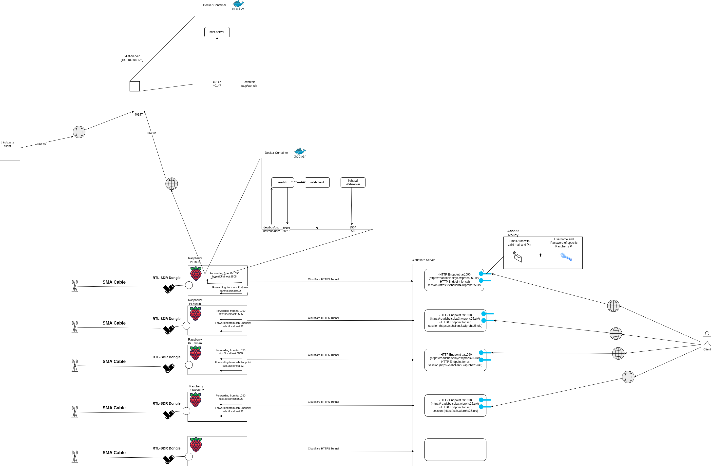
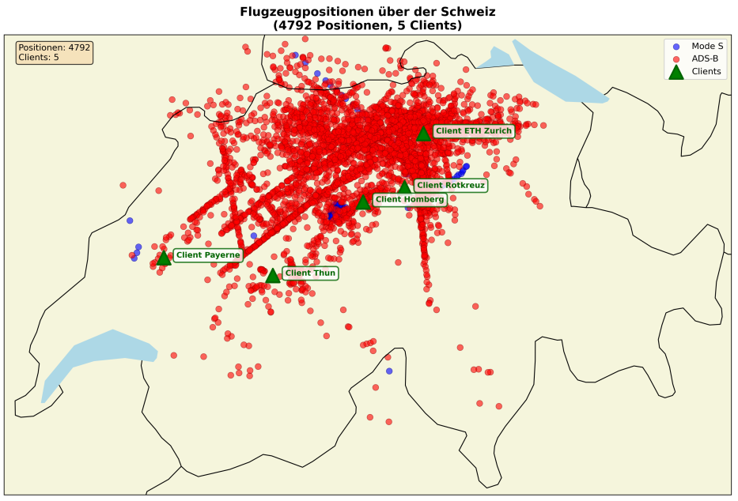
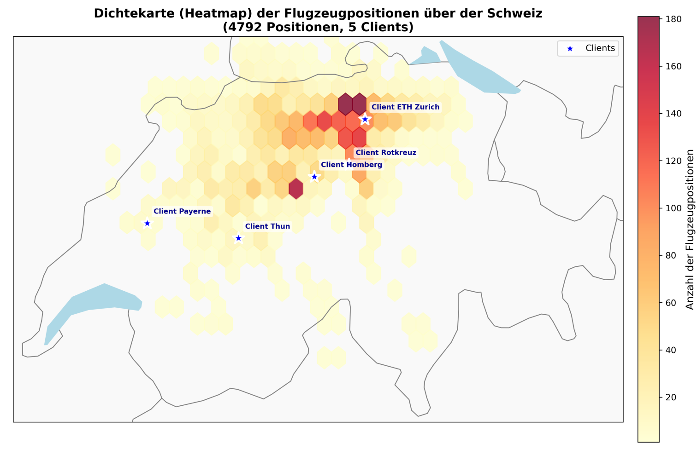

This project describes the design, implementation, and evaluation of a multilateration (MLAT) infrastructure for aircraft localization across central Switzerland. The system enables position determination of aircraft based on received transponder signals, independent of GPS data. This is particularly relevant for military applications and research in the field of MLAT spoofing.
Developed as a bachelor project (WIPRO) at Hochschule Luzern for the client Armasuisse (Swiss Federal Office for Defence Procurement), the system provides a functional foundation for further research in aviation safety and MLAT technology.
The implemented infrastructure consists of five geographically distributed receiver stations at the locations:
Each receiver station is based on a Raspberry Pi 4 with RTL-SDR hardware and ADS-B antenna. A central server calculates aircraft positions through triangulation using Time Difference of Arrival (TDOA) measurements from multiple stations.

System deployment architecture showing clients, server, and data flow (click to enlarge)
The software components (readsb, mlat-client, tar1090) were containerized with Docker, enabling efficient scaling and maintenance. Key features include:
The MLAT server runs on a Hetzner VPS and was implemented based on the open-source repository by wiedehopf. A significant enhancement was the adaptation of the server component to multilateralize both uncooperative Mode-S signals and cooperative ADS-B signals. Key features:

Scatterplot showing multilaterated positions - Red: ADS-B signals, Blue: Mode-S signals

Coverage heatmap showing multilaterated aircraft positions across Switzerland
Students: Dominik Arnet & Fabian Stettler
Client: Armasuisse W+T, Cyber-Defence Campus
Supervisor: Chris Ditze-Stephan
Institution: Hochschule Luzern, Department of Computer Science